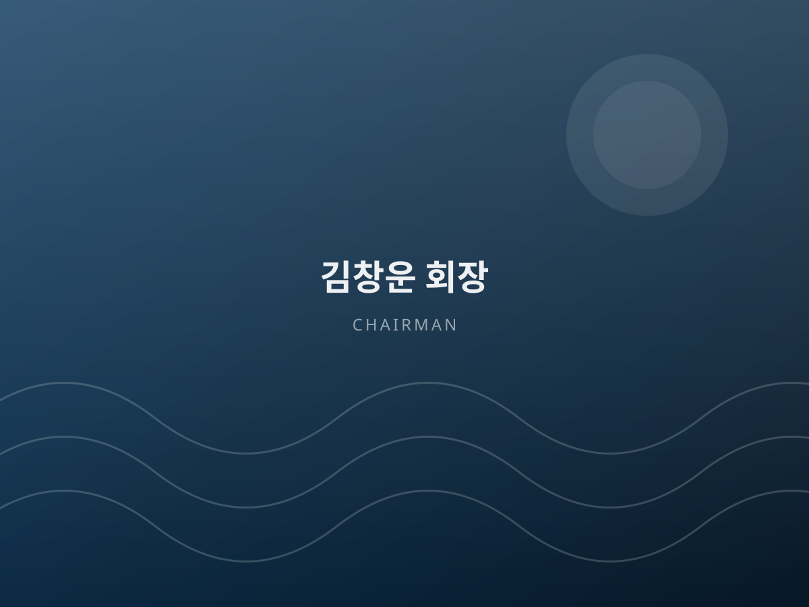

소개 · 인사말About Us
설립 취지와 연혁, 보유 특허와 조직 구성입니다. Growing together with everyone who works at sea.

협회장 인사말Message from the Chairman
해마다 바다가 더워지고 있습니다. 고수온과 적조, 거세진 태풍 앞에서 한 해 농사를 통째로 잃는 일이 이제는 일상이 되었습니다.
저희는 기후를 이기려 하기보다, 기후가 닿지 않는 곳으로 바다를 옮기기로 했습니다. 암반을 굴착한 지하 터널 안에서 지중열로 수온을 잡고, 전기 모터 없이 낙차 압력만으로 물을 순환시키는 양식 플랜트가 그 결과입니다.
협회는 이 기술을 독점하지 않습니다. 기술 인증과 교육, 비영리 보급을 맡아 어촌과 회원, 다음 세대와 성과를 나누는 것이 저희가 존재하는 이유입니다.
Our seas grow warmer every year. Losing an entire season to high water temperatures, red tides or a strengthened typhoon is no longer the exception.
Rather than fight the climate, we decided to move the sea where the climate cannot reach. The result is an aquaculture plant inside excavated rock — holding temperature with geothermal heat and circulating water on head pressure alone, without a single electric motor.
We do not hold this technology to ourselves. As a hub for certification, education and non-profit diffusion, our purpose is to share the results with coastal communities, our members and the generation that follows.
설립 취지Purpose of Establishment
“이 법인은 대한민국 헌법과 민법의 규정에 의한 대한민국 영토 내에 있는 미개발지인 해안천변 토지와 공유수면을 활용하여 효율적인 바다양식의 기틀을 마련하고, 미래의 식량자원인 수산물의 생산 증대를 도모하며, 영토 32,000㎢를 확장함으로써 농어민 소득 증대와 국가 경제 발전에 기여하는 것을 그 목적으로 한다.” “The purpose of this association is to establish a foundation for efficient marine aquaculture by utilising undeveloped coastal land and public waters within the territory of the Republic of Korea, to increase the production of seafood as a future food resource, and to contribute to farming and fishing incomes and the national economy by expanding usable territory by 32,000 km².”
사단법인 한반도양식기술보급협회 정관 제2조 — From the Articles of Association

남한 해안선 길이Coastline length
확장 가능 면적 (평균 폭 20km)Expandable area
국토면적(98,000㎢) 대비Of national land area
협회가 지향하는 가치What We Stand For
기술 보급 · 인재 양성 · 안전 문화 · 국제 협력 Technology, talent, safety and international cooperation — four pillars for the future of fisheries.
기술의 보급Diffusion
검증된 양식 기술을 누구나 활용할 수 있도록 현장에 전달합니다. Bringing verified technology to every farm, not only the largest.
인재의 양성Talent
체계적 교육으로 수산산업을 이끌 전문 인력을 길러냅니다. Structured education that develops the next generation of specialists.
안전의 문화Safety
해양 안전교육으로 사고 없는 일터를 만들어 갑니다. Marine safety education for workplaces without accidents.
세계로의 확장Global
해외시장 개척으로 우리 수산업의 무대를 넓힙니다. Expanding the stage for Korean fisheries around the world.
협회 개요Organization Profile
| 단체명Name | 사단법인 한반도양식기술보급협회 Korea Peninsula Aquaculture Technology Association |
|---|---|
| 대표자Chairman | 김창운 회장 (해안천 명장)Kim Chang-woon, Chairman |
| 설립 형태Type | 사단법인 (비영리법인) · 해양수산부 제278호Incorporated non-profit association (MOF No. 278) |
| 설립 승인Approved | 2019년 8월 19일 (법인 개업 2019년 9월 16일)19 Aug 2019 (registered 16 Sep 2019) |
| 사업자등록번호Business reg. no. | 444-82-00341 |
| 법인등록번호Corporate reg. no. | 250121-0041767 |
| 소재지Address | 서울특별시 영등포구 국회대로 800, 604호 (여의도동, 여의도 파라곤) #604 Yeouido Paragon, 800 Gukhoe-daero, Yeongdeungpo-gu, Seoul |
| 사업 부지Project site | 인천광역시 강화군 삼산면 상리 619 (석모도) 619 Sang-ri, Samsan-myeon, Ganghwa-gun, Incheon |
| 부설 연구기관Research institute | 한반도해안천여의도연구소Hanbando Coastal Stream Yeouido Research Institute |
| 주요 분야Field | 수산산업 양식기술 보급 및 해외시장 개척 · 자연순환식 어장 현대화시설 설치 · 수산산업 기술향상 교육 · 해양안전교육 Professional & scientific services / Education — aquaculture technology diffusion, overseas market development, skill training, marine safety education |
| 보유 기술Technology | 친환경 무동력 터널형 스마트 양식 플랜트, 에너지 자립형 스마트 염전 · 심층염지하수 저온 농축 천일염, 등록 특허 5건 및 PCT 국제출원 Power-free tunnel smart aquaculture plant, energy-independent smart salt farm, and patents in enclosure farming and water-temperature control |
| 연락처Phone | 010-2600-2608 |
| 이메일E-mail | seoul4624@naver.com |
협회 연혁Milestones
2008년 저작권 등록에서 시작해 2019년 해양수산부 설립 승인에 이르렀습니다. From the 2008 copyright registration of the Grand Canal concept, through the 2016 founding assembly, to approval by the Ministry of Oceans and Fisheries in 2019.
보유 특허Patents
2010년 첫 출원 이후 쌓아온 등록 특허입니다. Registered patents in enclosure aquaculture and water-temperature control, filed since 2010.
등록 특허Registered patents
PCT 국제출원PCT application
저작권 등록Copyrights
| 지상에 설치되는 바다양식장Land-installed sea farm | 제10-1170528호 · 2012.07.26 등록 |
|---|---|
| 해수의 자연순환이 가능한 내륙 내 바다양식 수조Natural-circulation inland tank | 제10-1170537호 · 2012.07.26 등록 · PCT/KR2011/000168 국제출원 |
| 부유물 제거 효율을 높인 육상 해양어류 양식구조물Land-based structure with debris removal | 제10-1170535호 · 2012.07.26 등록 |
| 파시(波市) 형성을 위한 해상구조물Offshore structure for a floating market | 제10-1441569호 · 2014.09.11 등록 |
| 친환경 인공양식장 형성을 위한 보 구조물Weir structure for eco-friendly farms | 제10-2058359호 · 2019.12.17 등록 |
※ 이 밖에 「지하 염수의 염분 채취를 위한 스마트 염전 시스템」(10-2024-0098887) 등 2건이 심사 중이며, 「한반도 대운하 구상」과 「해안을 이용한 축제식양식장 한반도 국토확장 지도」가 저작권으로 등록되어 있습니다. 특허권자·저작자는 김창운 회장입니다. ※ Two further applications are under examination, including a smart salt-farm system for extracting salt from deep brine (10-2024-0098887). Two related works are registered as copyrights. All rights are held by Chairman Kim Chang-woon.
등록 증서Certificates
특허청과 한국저작권위원회가 발급한 원본입니다. 눌러서 크게 볼 수 있습니다. Originals issued by KIPO and the Korea Copyright Commission. Click to enlarge.
※ 개인정보 보호를 위해 특허권자·저작자의 주민등록번호와 주소 등은 가린 뒤 게재했습니다. ※ Personal identifiers and addresses have been redacted before publication.
수상 내역Awards & Recognition
김창운 회장의 주요 수상 기록입니다. Major awards received by Chairman Kim Chang-woon in coastal development and the environment.
명예의 전당 헌액Hall of Fame
대한민국 명예의 전당 · 글로벌 명예의 전당 / 해안천개발 부문 종합 해안천개발 명장 선정 (인증번호 20250105) Enshrined in the Korea & Global Hall of Fame as Master of Coastal Stream Development (No. 20250105)
대한민국 새시대 대상Great Company Award
2023 Great Company & Global Leader 대상 / 글로벌단체 국가격상 선도부문 (Global Leaders Club · Leaders Times) 2023 Great Company & Global Leader Grand Prize — National Advancement category
감사패Plaque of Appreciation
어업회사법인 한반도SD&C 주식회사 Presented by Hanbando SD&C Co., Ltd.
최고품질평가상Top Quality Award
2016 Great Company & 글로벌리더 / 글로벌 해안천개발 부문 (동아일보) 2016 Great Company & Global Leader — Global Coastal Development (Dong-A Ilbo)
환경인 대상Environmentalist Award
2013 올해의 新한국인 大賞 / 환경인 대상 (시사투데이) 2013 New Korean of the Year — Grand Prize for Environment (Sisa Today)
한국을 이끄는 혁신리더Innovation Leader
2013 한국을 이끄는 혁신리더 / 환경연구소 신규개발 부문 (뉴스메이커) 2013 Innovation Leader of Korea — Environmental R&D (NewsMaker)
조직 구성Structure
회원 가입 및 협약 문의Join us
회원 가입, 업무 협약, 기술 자문 관련 문의를 받고 있습니다.Membership, partnership and advisory inquiries are welcome.